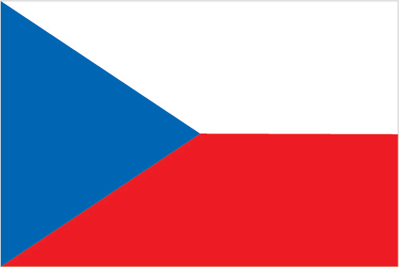
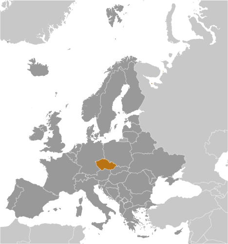
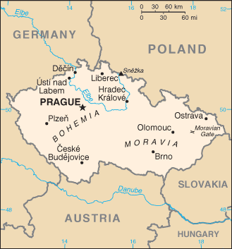

Europe :: CZECHIA
Introduction :: CZECHIA
-
At the close of World War I, the Czechs and Slovaks of the former Austro-Hungarian Empire merged to form Czechoslovakia. During the interwar years, having rejected a federal system, the new country's predominantly Czech leaders were frequently preoccupied with meeting the increasingly strident demands of other ethnic minorities within the republic, most notably the Slovaks, the Sudeten Germans, and the Ruthenians (Ukrainians). On the eve of World War II, Nazi Germany occupied the territory that today comprises Czechia, and Slovakia became an independent state allied with Germany. After the war, a reunited but truncated Czechoslovakia (less Ruthenia) fell within the Soviet sphere of influence. In 1968, an invasion by Warsaw Pact troops ended the efforts of the country's leaders to liberalize communist rule and create "socialism with a human face," ushering in a period of repression known as "normalization." The peaceful "Velvet Revolution" swept the Communist Party from power at the end of 1989 and inaugurated a return to democratic rule and a market economy. On 1 January 1993, the country underwent a nonviolent "velvet divorce" into its two national components, the Czech Republic and Slovakia. The Czech Republic joined NATO in 1999 and the European Union in 2004. The country changed its short-form name to Czechia in 2016.
Geography :: CZECHIA
-
Central Europe, between Germany, Poland, Slovakia, and Austria49 45 N, 15 30 EEuropetotal: 78,867 sq kmland: 77,247 sq kmwater: 1,620 sq kmcountry comparison to the world: 116slightly smaller than South Carolinatotal: 2,143 kmborder countries (4): Austria 402 km, Germany 704 km, Poland 796 km, Slovakia 241 km0 km (landlocked)none (landlocked)temperate; cool summers; cold, cloudy, humid wintersBohemia in the west consists of rolling plains, hills, and plateaus surrounded by low mountains; Moravia in the east consists of very hilly countrymean elevation: 433 melevation extremes: lowest point: Labe (Elbe) River 115 mhighest point: Snezka 1,602 mhard coal, soft coal, kaolin, clay, graphite, timber, arable landagricultural land: 54.8%arable land 41%; permanent crops 1%; permanent pasture 12.8%forest: 34.4%other: 10.8% (2011 est.)320 sq km (2012)a fairly even distribution throughout most of the country, but the northern and eastern regions tend to have larger urban concentrationsfloodingair and water pollution in areas of northwest Bohemia and in northern Moravia around Ostrava present health risks; acid rain damaging forests; efforts to bring industry up to EU code should improve domestic pollutionparty to: Air Pollution, Air Pollution-Nitrogen Oxides, Air Pollution-Persistent Organic Pollutants, Air Pollution-Sulfur 85, Air Pollution-Sulfur 94, Air Pollution-Volatile Organic Compounds, Antarctic-Environmental Protocol, Antarctic Treaty, Biodiversity, Climate Change, Climate Change-Kyoto Protocol, Desertification, Endangered Species, Environmental Modification, Hazardous Wastes, Law of the Sea, Ozone Layer Protection, Ship Pollution, Wetlands, Whalingsigned, but not ratified: none of the selected agreementslandlocked; strategically located astride some of oldest and most significant land routes in Europe; Moravian Gate is a traditional military corridor between the North European Plain and the Danube in central Europe
People and Society :: CZECHIA
-
10,644,842 (July 2016 est.)country comparison to the world: 87noun: Czech(s)adjective: CzechCzech 64.3%, Moravian 5%, Slovak 1.4%, other 1.8%, unspecified 27.5% (2011 est.)Czech (official) 95.4%, Slovak 1.6%, other 3% (2011 census)Roman Catholic 10.4%, Protestant (includes Czech Brethren and Hussite) 1.1%, other and unspecified 54%, none 34.5% (2011 est.)0-14 years: 15.09% (male 826,005/female 782,470)15-24 years: 9.89% (male 542,433/female 511,941)25-54 years: 43.79% (male 2,396,550/female 2,271,974)55-64 years: 12.73% (male 658,784/female 698,782)65 years and over: 18.5% (male 817,550/female 1,154,443) (2016 est.)total dependency ratio: 49.5%youth dependency ratio: 22.5%elderly dependency ratio: 27%potential support ratio: 3.7% (2015 est.)total: 41.7 yearsmale: 40.4 yearsfemale: 43 years (2016 est.)country comparison to the world: 330.14% (2016 est.)country comparison to the world: 1919.5 births/1,000 population (2016 est.)country comparison to the world: 20310.4 deaths/1,000 population (2016 est.)country comparison to the world: 352.3 migrant(s)/1,000 population (2016 est.)country comparison to the world: 42a fairly even distribution throughout most of the country, but the northern and eastern regions tend to have larger urban concentrationsurban population: 73% of total population (2015)rate of urbanization: 0.35% annual rate of change (2010-15 est.)PRAGUE (capital) 1.314 million (2015)at birth: 1.06 male(s)/female0-14 years: 1.06 male(s)/female15-24 years: 1.06 male(s)/female25-54 years: 1.05 male(s)/female55-64 years: 0.94 male(s)/female65 years and over: 0.7 male(s)/femaletotal population: 0.97 male(s)/female (2016 est.)28.1 (2013 est.)4 deaths/100,000 live births (2015 est.)country comparison to the world: 173total: 2.6 deaths/1,000 live birthsmale: 2.8 deaths/1,000 live birthsfemale: 2.5 deaths/1,000 live births (2016 est.)country comparison to the world: 217total population: 78.6 yearsmale: 75.7 yearsfemale: 81.8 years (2016 est.)country comparison to the world: 561.45 children born/woman (2016 est.)country comparison to the world: 20486.3%note: percent of women aged 18-49 (2008)7.4% of GDP (2014)country comparison to the world: 633.71 physicians/1,000 population (2010)6.8 beds/1,000 population (2011)improved:urban: 100% of populationrural: 100% of populationtotal: 100% of populationunimproved:urban: 0% of populationrural: 0% of populationtotal: 0% of population (2015 est.)improved:urban: 99.1% of populationrural: 99.2% of populationtotal: 99.1% of populationunimproved:urban: 0.9% of populationrural: 0.8% of populationtotal: 0.9% of population (2015 est.)0.05% (2013 est.)country comparison to the world: 1203,400 (2013 est.)country comparison to the world: 111fewer than 100 (2013 est.)country comparison to the world: 12129.1% (2014)country comparison to the world: 214.3% of GDP (2012)country comparison to the world: 106definition: NAtotal population: 99%male: 99%female: 99% (2011 est.)total: 17 yearsmale: 16 yearsfemale: 18 years (2014)total: 15.9%male: 15%female: 17.1% (2014 est.)country comparison to the world: 57
Government :: CZECHIA
-
conventional long form: Czech Republicconventional short form: Czechialocal long form: Ceska republikalocal short form: Ceskoetymology: name derives from the Czechs, a West Slavic tribe who rose to prominence in the late 9th century A.D.parliamentary republicname: Praguegeographic coordinates: 50 05 N, 14 28 Etime difference: UTC+1 (6 hours ahead of Washington, DC, during Standard Time)daylight saving time: +1hr, begins last Sunday in March; ends last Sunday in October13 regions (kraje, singular - kraj) and 1 capital city* (hlavni mesto); Jihocesky (South Bohemia), Jihomoravsky (South Moravia), Karlovarsky (Karlovy Vary), Kralovehradecky (Hradec Kralove), Liberecky (Liberec), Moravskoslezsky (Moravia-Silesia), Olomoucky (Olomouc), Pardubicky (Pardubice), Plzensky (Pilsen), Praha (Prague)*, Stredocesky (Central Bohemia), Ustecky (Usti), Vysocina (Highlands), Zlinsky (Zlin)1 January 1993 (Czechoslovakia split into the Czech Republic and Slovakia); note - although 1 January is the day the Czech Republic came into being, the Czechs commemorate 28 October 1918, the day the former Czechoslovakia declared its independence from the Austro-Hungarian Empire, as their independence dayCzechoslovak Founding Day, 28 October (1918)previous 1960; latest ratified 16 December 1992, effective 1 January 1993; amended several times, last in 2013 (2016)new civil code enacted in 2014, replacing civil code of 1964 - based on former Austro-Hungarian civil codes and socialist theory - and reintroducing former Czech legal terminologyhas not submitted an ICJ jurisdiction declaration; accepts ICCt jurisdictioncitizenship by birth: nocitizenship by descent only: at least one parent must be a citizen of the Czech Republicdual citizenship recognized: noresidency requirement for naturalization: 5 years18 years of age; universalchief of state: President Milos ZEMAN (since 8 March 2013)head of government: Prime Minister Bohuslav SOBOTKA (since 17 January 2014); First Deputy Prime Minister Andrej BABIS and Deputy Prime Minister Pavel BELOBRADEK (both since 29 January 2014)cabinet: Cabinet appointed by the president on the recommendation of the prime ministerelections/appointments: president directly elected by absolute majority popular vote in 2 rounds if needed for a 5-year term (limited to 2 consecutive terms); elections last held on 11-12 January 2013 with a runoff on 25-26 January 2013 (next to be held in January 2018); prime minister appointed by the president for a 4-year termelection results: Milos ZEMAN elected president; percent of popular vote - Milos ZEMAN (SPO) 54.8%, Karel SCHWARZENBERG (TOP 09) 45.2%description: bicameral Parliament or Parlament consists of the Senate or Senat (81 seats; members directly elected in single-seat constituencies by absolute majority vote in two rounds if needed; members serve 6-year terms with one-third of the membership renewed every 2 years) and the Chamber of Deputies or Poslanecka Snemovna (200 seats; members directly elected in multi-seat constituencies by proportional representation vote; members serve 4-year terms)elections: Senate - last held in two rounds on 7-8 and 14-15 October 2016 (next to be held in October 2018); Chamber of Deputies - last held on 25-26 October 2013 (next to be held in 2017)election results: Senate - percent of vote by party - NA; seats by party as of 15 October 2016 - CSSD 25, KDU-CSL 14, ODS 9, ANO 2011 7, STAN 5, SZ 4, TOP 09 2, SLK 2, S.cz. 2, KSCM 1, Nestranici 1, Citizens Together 1, SsCR 1, Pirate 1, Patriotic Citizens 1, Movement for Prague 1, SPO 1, Ostravak 1, independent 2; Chamber of Deputies - percent of vote by party - CSSD 20.5%, ANO 2011 18.7%, KSCM 14.9%, TOP 09 12%, ODS 7.7%, Usvit 6.9%, KDU-CSL 6.8% other 12.5%; seats by party - CSSD 50, ANO 2011 47, KSCM 33, TOP 09 + STAN 26, ODS 16, KDU-CSL 14, Usvit 8, independent 6highest court(s): Supreme Court (organized into Civil Law and Commercial Division, and Criminal Division each with a court chief justice, vice justice, and several judges); Constitutional Court (consists of 15 justices); Supreme Administrative Court (consists of 28 judges)judge selection and term of office: Supreme Court judges proposed by the Chamber of Deputies and appointed by the president; judges appointed for life; Constitutional Court judges appointed by the president and confirmed by the Senate; judges appointed for 10-year, renewable terms; Supreme Administrative Court judges selected by the president of the Court; judge term unlimitedsubordinate courts: High Court; superior, regional, and district courtsparties in parliament: ANO 2011 or ANO [Andrej BABIS]Citizens TogetherChristian Democratic Union-Czechoslovak People's Party or KDU-CSL [Pavel BELOBRADEK]Civic Democratic Party or ODS [Petr FIALA]Communist Party of Bohemia and Moravia or KSCM [Vojtech FILIP]Czech Pirate Party [Ivan BARTOS]Czech Social Democratic Party or CSSD [Bohuslav SOBOTKA]Freeholder or SsCR [Petr BAJER]Green Party or SZ [Matej STROPNICKY]Liberal Reform Party or Ostravak [Eva SCHWARZOVA]Mayors and Independents or STAN [Petr GAZDIK]Mayors for Liberec Region or SLK [Marek PIETER]Movement for PragueNestranici (Independents) or NK [Vera RYBOVA]North Bohemians or S.cz [Bronislav SCHWARZ]Ostravak [Magdalena KOZUBOVA, sec.]Party of Civic Rights or SPO [Jan VELEBA]Patriotic CitizensTradition Responsibility Prosperity 09 or TOP 09 [Miroslav KALOUSEK]parties outside parliament: Dawn - National Coalition or Usvit [Miroslav LIDINSKY]Free Citizens Party or Svobodni [Petr MACH]Freedom and Direct Democracy or SPD [Tomio OKAMURA]Czech-Moravian Confederation of Trade Unions or CMKOS [Josef STREDULA]Australia Group, BIS, BSEC (observer), CD, CE, CEI, CERN, EAPC, EBRD, ECB, EIB, ESA, EU, FAO, IAEA, IBRD, ICAO, ICC (national committees), ICCt, ICRM, IDA, IEA, IFC, IFRCS, ILO, IMF, IMO, IMSO, Interpol, IOC, IOM, IPU, ISO, ITSO, ITU, ITUC (NGOs), MIGA, MONUSCO, NATO, NEA, NSG, OAS (observer), OECD, OIF (observer), OPCW, OSCE, PCA, Schengen Convention, SELEC, UN, UNCTAD, UNESCO, UNHCR, UNIDO, UNWTO, UPU, WCO, WFTU (NGOs), WHO, WIPO, WMO, WTO, ZCchief of mission: Ambassador Petr GANDALOVIC (since 23 May 2011)chancery: 3900 Spring of Freedom Street NW, Washington, DC 20008telephone: [1] (202) 274-9100FAX: [1] (202) 966-8540consulate(s) general: Chicago, Los Angeles, New Yorkchief of mission: Ambassador Andrew H. SCHAPIRO (since 30 September 2014)embassy: Trziste 15, 118 01 Prague 1 - Mala Stranamailing address: use embassy street addresstelephone: [420] 257 022 000FAX: [420] 257 022 809two equal horizontal bands of white (top) and red with a blue isosceles triangle based on the hoist sidenote: is identical to the flag of the former Czechoslovakiadouble-tailed lion; national colors: white, red, bluename: "Kde domov muj?" (Where is My Home?)lyrics/music: Josef Kajetan TYL/Frantisek Jan SKROUPnote: adopted 1993; the anthem was originally written as incidental music to the play "Fidlovacka" (1834), it soon became very popular as an unofficial anthem of the Czech nation; its first verse served as the official Czechoslovak anthem beginning in 1918, while the second verse (Slovak) was dropped after the split of Czechoslovakia in 1993
Economy :: CZECHIA
-
Czechia is a stable and prosperous market economy that is closely integrated with the EU, especially since the country's EU accession in 2004. The auto industry is the largest single industry, and, together with its upstream suppliers, accounts for nearly 24% of Czech manufacturing. Czechia produced more than a million cars for the first time in 2010, over 80% of which were exported.While the conservative, inward-looking Czech financial system has remained relatively healthy, the small, open, export-driven Czech economy remains sensitive to changes in the economic performance of its main export markets, especially Germany. When Western Europe and Germany fell into recession in late 2008, demand for Czech goods plunged, leading to double digit drops in industrial production and exports. As a result, real GDP fell sharply in 2009. The economy slowly recovered in the second half of 2009 and registered weak growth in the next two years. In 2012 and 2013, however, the economy fell into a recession again, due both to a slump in external demand in the EU and to the government’s austerity measures, returning to weak growth in 2014, and stronger growth in 2015.Foreign and domestic businesses alike voice concerns about corruption, especially in public procurement. Other long term challenges include dealing with a rapidly aging population, funding an unsustainable pension and health care system, and diversifying away from manufacturing and toward a more high-tech, services-based, knowledge economy.$332.5 billion (2015 est.)$319 billion (2014 est.)$312.8 billion (2013 est.)note: data are in 2015 US dollarscountry comparison to the world: 51$181.9 billion (2015 est.)4.2% (2015 est.)2% (2014 est.)-0.5% (2013 est.)country comparison to the world: 56$31,600 (2015 est.)$30,300 (2014 est.)$29,700 (2013 est.)note: data are in 2015 US dollarscountry comparison to the world: 5928.2% of GDP (2015 est.)25.9% of GDP (2014 est.)24% of GDP (2013 est.)country comparison to the world: 36household consumption: 47%government consumption: 19.5%investment in fixed capital: 26.3%investment in inventories: 1%exports of goods and services: 83%imports of goods and services: -76.9% (2015 est.)agriculture: 2.5%industry: 37.3%services: 60.2% (2015 est.)wheat, potatoes, sugar beets, hops, fruit; pigs, poultrymotor vehicles, metallurgy, machinery and equipment, glass, armaments4.5% (2015 est.)country comparison to the world: 485.517 million (2015 est.)country comparison to the world: 72agriculture: 2.6%industry: 37.4%services: 60% (2012)6.5% (2015 est.)7.7% (2014 est.)country comparison to the world: 758.6% (2012 est.)lowest 10%: 1.5%highest 10%: 29.1% (2012 est.)24.9 (2012)25.4 (1996)country comparison to the world: 141revenues: $76.68 billionexpenditures: $77.44 billion (2015 est.)42.2% of GDP (2015 est.)country comparison to the world: 35-0.4% of GDP (2015 est.)country comparison to the world: 4741.1% of GDP (2015 est.)42.7% of GDP (2014 est.)country comparison to the world: 113calendar year0.3% (2015 est.)0.4% (2014 est.)country comparison to the world: 610.05% (31 December 2013)0.05% (31 December 2012)note: this is the two-week repo, the main rate CNB usescountry comparison to the world: 1504.28% (31 December 2015 est.)4.64% (31 December 2014 est.)country comparison to the world: 154$124.9 billion (31 December 2015 est.)$122.8 billion (31 December 2014 est.)country comparison to the world: 29$152.9 billion (31 December 2014 est.)$155.7 billion (31 December 2013 est.)country comparison to the world: 50$127.5 billion (31 December 2015 est.)$137.1 billion (31 December 2014 est.)country comparison to the world: 49$54.92 billion (30 December 3013 est.)$59.88 billion (28 December 2012 est.)$53.2 billion (30 December 2011 est.)country comparison to the world: 50$1.648 billion (2015 est.)$366 million (2014 est.)country comparison to the world: 33$131 billion (2015 est.)$146.6 billion (2014 est.)country comparison to the world: 33machinery and transport equipment, raw materials, fuel, chemicalsGermany 32.4%, Slovakia 9%, Poland 5.8%, UK 5.3%, France 5.1%, Austria 4.1% (2015)$122.5 billion (2015 est.)$135.9 billion (2014 est.)country comparison to the world: 33machinery and transport equipment, raw materials and fuels, chemicalsGermany 30%, Poland 9%, China 8.3%, Slovakia 6.6%, Netherlands 5%, Austria 4.1% (2015)$64.49 billion (31 December 2015 est.)$54.49 billion (31 December 2014 est.)country comparison to the world: 32$126.2 billion (31 December 2015 est.)$129.1 billion (31 December 2014 est.)country comparison to the world: 45$136.1 billion (31 December 2015 est.)$146 billion (31 December 2014 est.)country comparison to the world: 39$41.48 billion (31 December 2015 est.)$42.98 billion (31 December 2014 est.)country comparison to the world: 45koruny (CZK) per US dollar -24.599 (2015 est.)20.758 (2014 est.)20.758 (2013 est.)19.59 (2012 est.)17.696 (2011 est.)
Energy :: CZECHIA
-
electrification - total population: 100% (2016)80 billion kWh (2014 est.)country comparison to the world: 3760 billion kWh (2014 est.)country comparison to the world: 4228 billion kWh (2014 est.)country comparison to the world: 712 billion kWh (2014 est.)country comparison to the world: 2122 million kW (2014 est.)country comparison to the world: 4055.6% of total installed capacity (2012 est.)country comparison to the world: 14118.8% of total installed capacity (2012 est.)country comparison to the world: 105.3% of total installed capacity (2012 est.)country comparison to the world: 12514.6% of total installed capacity (2012 est.)country comparison to the world: 212,836 bbl/day (2015 est.)country comparison to the world: 86520.1 bbl/day (2015 est.)country comparison to the world: 87142,500 bbl/day (2015 est.)country comparison to the world: 3915 million bbl (1 January 2016 es)country comparison to the world: 88164,800 bbl/day (2015 est.)country comparison to the world: 63193,400 bbl/day (2015 est.)country comparison to the world: 5853,720 bbl/day (2015 est.)country comparison to the world: 6382,060 bbl/day (2015 est.)country comparison to the world: 63259 million cu m (2014 est.)country comparison to the world: 767.522 billion cu m (2014 est.)country comparison to the world: 531 million cu m (2014 est.)country comparison to the world: 507.249 billion cu m (2014 est.)country comparison to the world: 293.964 billion cu m (1 January 2016 es)country comparison to the world: 95103 million Mt (2013 est.)country comparison to the world: 41
Communications :: CZECHIA
-
total subscriptions: 1,949,800subscriptions per 100 inhabitants: 18 (July 2015 est.)country comparison to the world: 60total: 13.925 millionsubscriptions per 100 inhabitants: 131 (July 2015 est.)country comparison to the world: 70general assessment: good telephone and Internet service; competition among the three major mobile phone services has driven down pricesdomestic: access to the fixed-line telephone network expanded throughout the 1990s, but the number of fixed line connections has been dropping since then; mobile telephone usage increased sharply beginning in the mid-1990s, and the number of cellular telephone subscriptions now greatly exceeds the populationinternational: country code - 420; satellite earth stations - 6 (2 Intersputnik - Atlantic and Indian Ocean regions, 1 Intelsat, 1 Eutelsat, 1 Inmarsat, 1 Globalstar) (2015)roughly 130 TV broadcasters operating some 350 channels with 4 publicly operated and the remainder in private hands; 16 TV stations have national coverage with 4 being publicly operated; cable and satellite TV subscription services are available; 63 radio broadcasters are registered operating roughly 80 radio stations with 15 stations publicly operated; 10 radio stations provide national coverage with the remainder local or regional (2008).cztotal: 8.654 millionpercent of population: 81.3% (July 2015 est.)country comparison to the world: 49
Transportation :: CZECHIA
-
number of registered air carriers: 4inventory of registered aircraft operated by air carriers: 48annual passenger traffic on registered air carriers: 4,971,616annual freight traffic on registered air carriers: 26,619,650 mt-km (2015)OK (2016)128 (2013)country comparison to the world: 46total: 41over 3,047 m: 22,438 to 3,047 m: 91,524 to 2,437 m: 12914 to 1,523 m: 2under 914 m: 16 (2013)total: 871,524 to 2,437 m: 1914 to 1,523 m: 25under 914 m: 61 (2013)1 (2013)gas 7,160 km; oil 536 km; refined products 94 km (2013)total: 9,621.5 kmstandard gauge: 9,519.5 km 1.435-m gauge (3,240.5 km electrified)narrow gauge: 102 km 0.760-m gauge (2014)country comparison to the world: 23total: 130,661 km (includes urban roads)paved: 130,661 km (includes 730 km of expressways) (2011)country comparison to the world: 38664 km (principally on Elbe, Vltava, Oder, and other navigable rivers, lakes, and canals) (2010)country comparison to the world: 76registered in other countries: 1 (Saint Vincent and the Grenadines 1) (2010)country comparison to the world: 150river port(s): Prague (Vltava); Decin, Usti nad Labem (Elbe)
Military and Security :: CZECHIA
-
Army of the Czech Republic (Armada Ceske Republiky): General Staff (Generalni Stab; includes Land Forces (Pozemni Sily) and Air Forces (Vzdusne Sily)) (2015)18-28 years of age for male and female voluntary military service; no conscription (2012)1.04% of GDP (2015)1.08% of GDP (2014)1.06% of GDP (2013)1.13% of GDP (2012)1.15% of GDP (2011)country comparison to the world: 94
Transnational Issues :: CZECHIA
-
while threats of international legal action never materialized in 2007, 915,220 Austrians, with the support of the popular Freedom Party, signed a petition in January 2008, demanding that Austria block the Czech Republic's accession to the EU unless Prague closes its controversial Soviet-style nuclear plant in Temelin, bordering Austriastateless persons: 1,502 (2015)transshipment point for Southwest Asian heroin and minor transit point for Latin American cocaine to Western Europe; producer of synthetic drugs for local and regional markets; susceptible to money laundering related to drug trafficking, organized crime; significant consumer of ecstasy (2008)